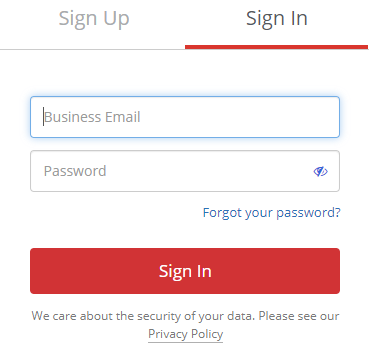
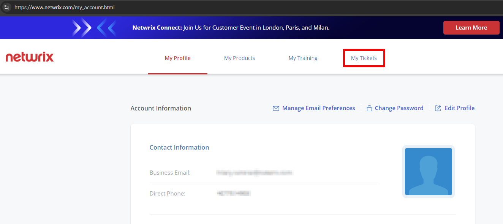
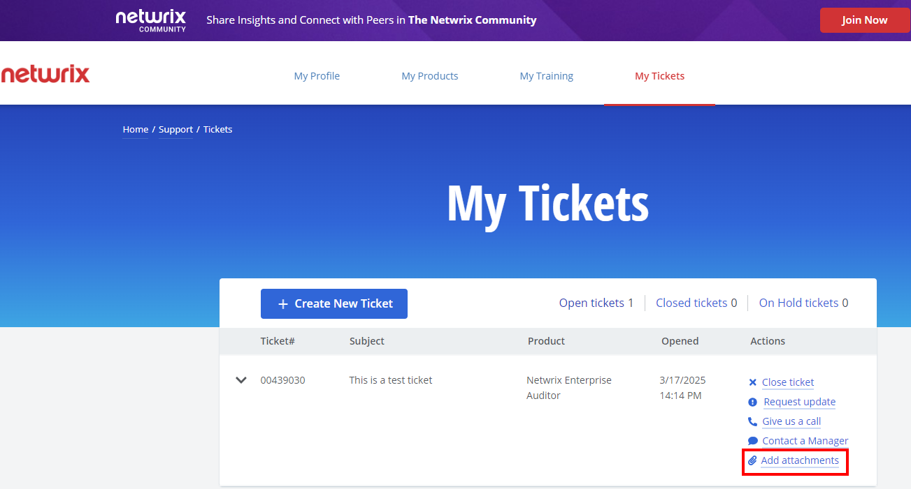
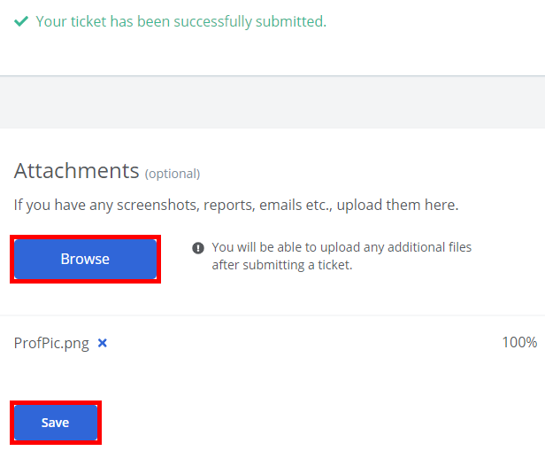
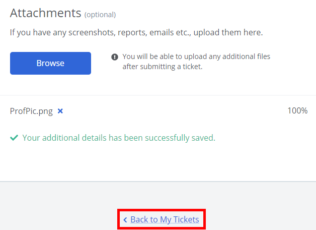

Question
How can you add attachments (e.g., files) to a Netwrix Support ticket?
Answer
Uploading artifacts to the ticket via the Netwrix Customer Portal is the most secure and recommended way to send files to Netwrix Support. To add attachments such as files to a Netwrix Support ticket, follow the steps below:
-
Log in to the Netwrix Customer Portal at https://netwrix.com/my_account.html.
 -
Click the My Tickets tab.
 -
Locate the ticket for the artifacts and select Add attachments from the Actions column on the right.

NOTE: There is also the option to upload attachments immediately upon submitting a ticket once the Browse button is enabled using the below steps:
Click Browse, select your file(s), and click Save.
Click Back to My Tickets to view your ticket. If needed, this is where you can upload any additional files via the Add attachments Action button of the ticket interface.
